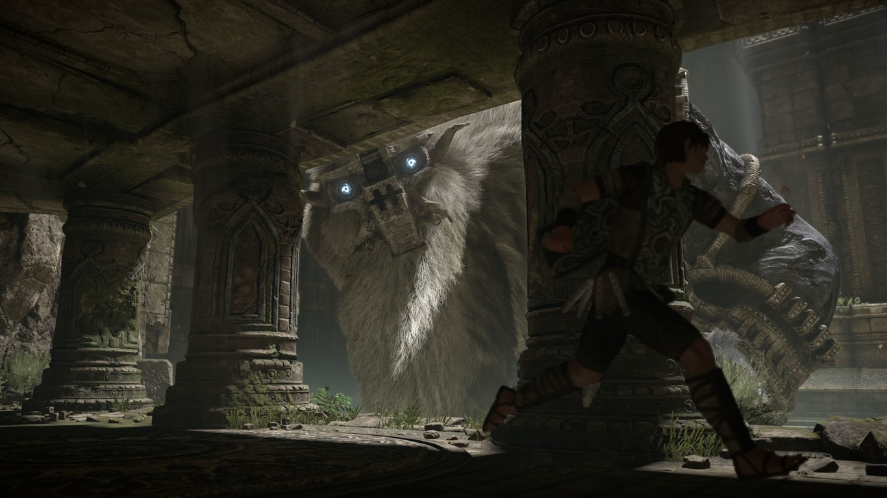

Blogs › Shadow Of The Colossus: Por qué los colosos de Shadow of the Colossus son inolvidables

Shadow Of The Colossus: Por qué los colosos de Shadow of the Colossus son inolvidables
Shadow of the Colossus no es solo un videojuego; es una lección magistral de diseño, escala y emoción. Al eliminar los enemigos menores y dejar un mundo vacío, Fumito Ueda convirtió a cada uno de sus 16 colosos en una experiencia única: puzles vivientes donde la criatura misma es el escenario a conquistar.
Lo que hace tan especial a estos titanes es su asombrosa variedad y cómo te obligan a adaptarte al entorno:
1. Ecosistemas en movimiento: Desde la importancia de Gaius en la tierra fierme hasta la serenidad deHydrus sumergido en las aguas oscuras, cada encuentri exige observar el comportamiento del gigante y usar el terreno a tu favor
2. La libertad del aire: Enfrentamientos como los de Avion o el majestuoso Phalax ofrecen momentos inolvidables de pura adrenalina. Galopar a toda velocidad sobre Agro por el desierto para saltar hacia las alas de Phalanx mientras vuela es una de las sensaciones más eufóricas de la historia del videojuego.
3. Musica que guía la emoción: La banda sonora de Kow Otani transforma cada batalla en algo mas Epico. El paso de un silencio tenso a un estallido orquestal justo cuando logras aferrarte al pelaje del coloso convierte la escalada en un triunfo totalmente emocionante y heroico.
Cada coloso es una obra de arte aquitectónica y emocionante. Shadow Of The Colossus demuestra que no es necesitan miles de enemigos para crear un mundo memorable y una experiencia inolvidable, solo la valentía para enfrentarse a lo extraordinario.